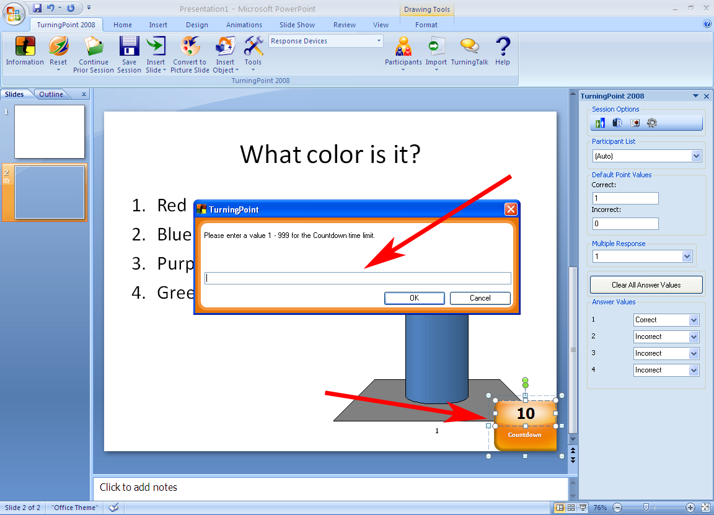
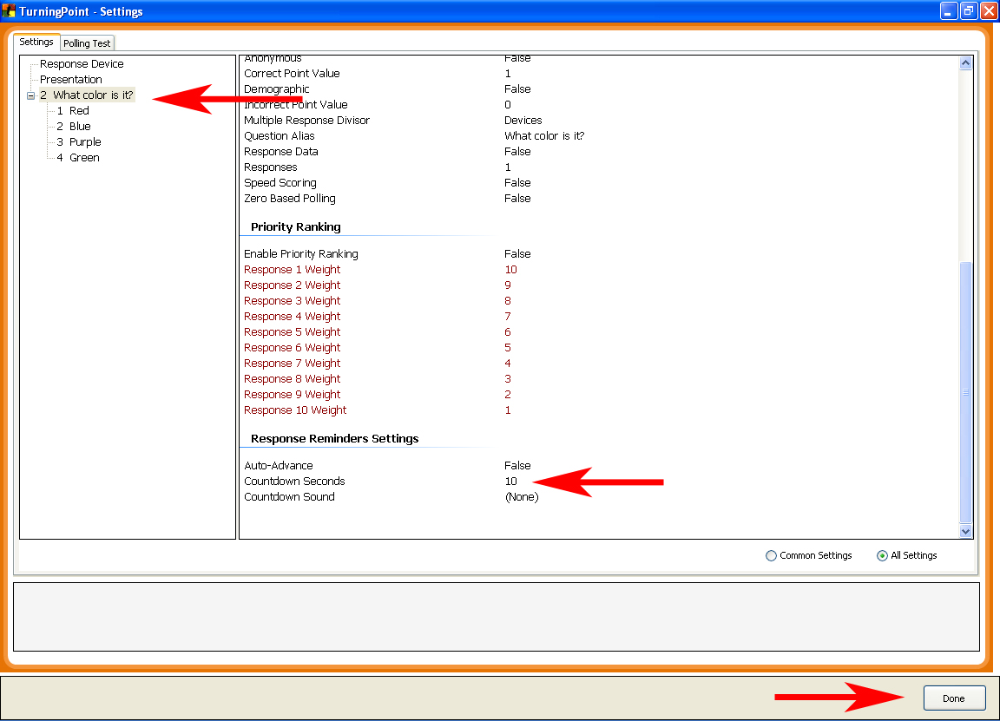

Changing a Countdown's duration:
Method #1:
- Click on the Countdown graphic
- In the “TurningPoint” window, enter a value other than “10”

Method #2
- From the “TurningPoint 2008” tab, click on the “Tools” icon.
- Scroll down to “Settings” and select it.
- In “Settings” on the left-hand side of the screen, make sure that the slide that you want to alter is selected. Or, select “Presentation” to alter all slides in the presentation.
- Scroll down to the “Response Reminders Settings” section.
- Set “Countdown Seconds” to a value other than 10.
- Click “Done” button in the bottom right hand corner.
- Remember that during a presentation Polling will close automatically when the Countdown is complete.
